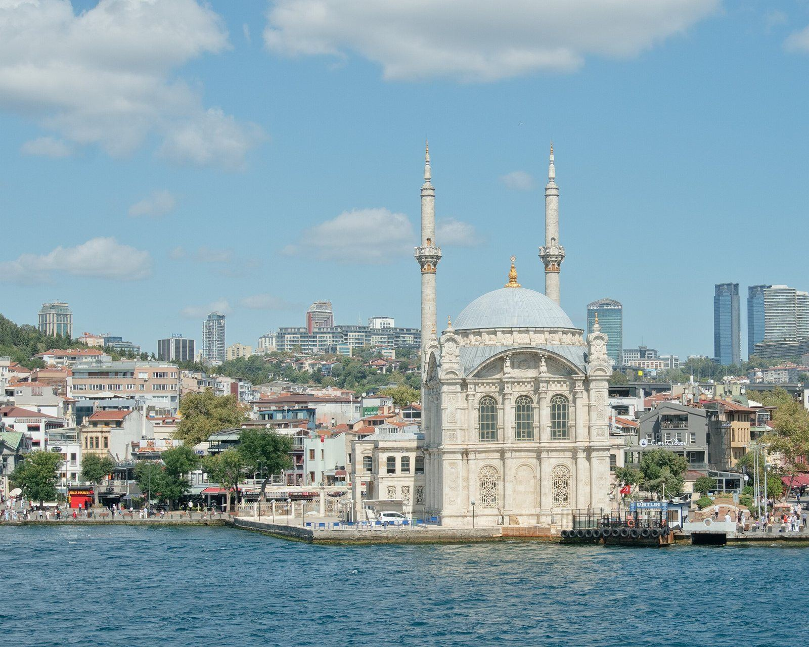
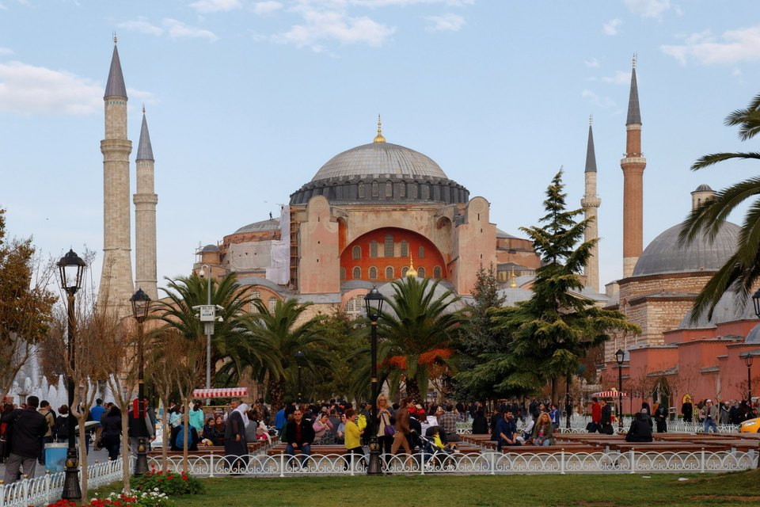
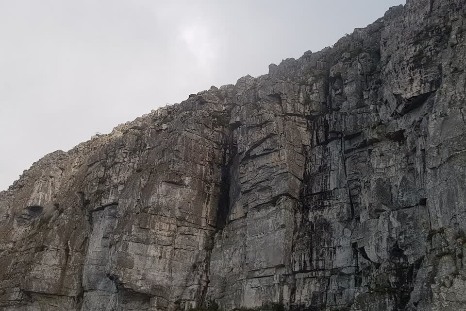
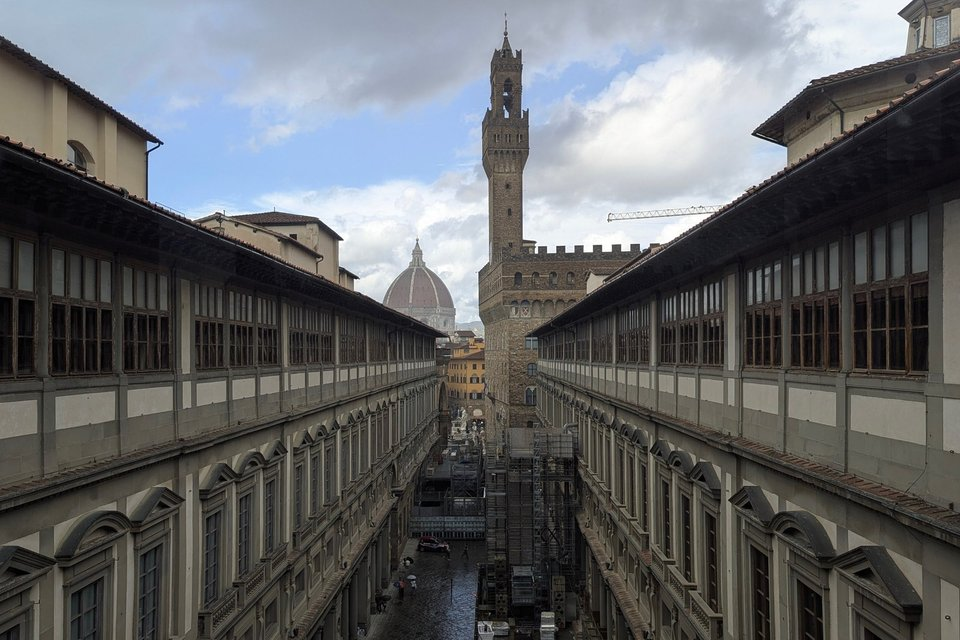
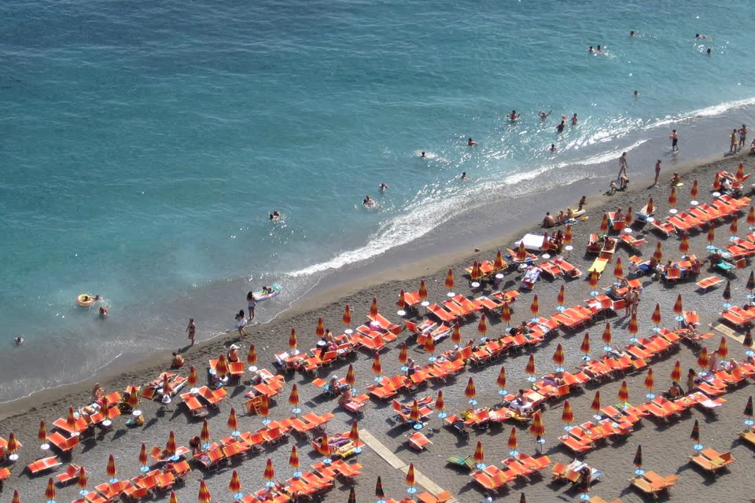
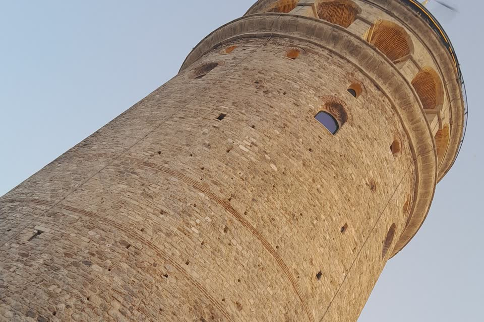
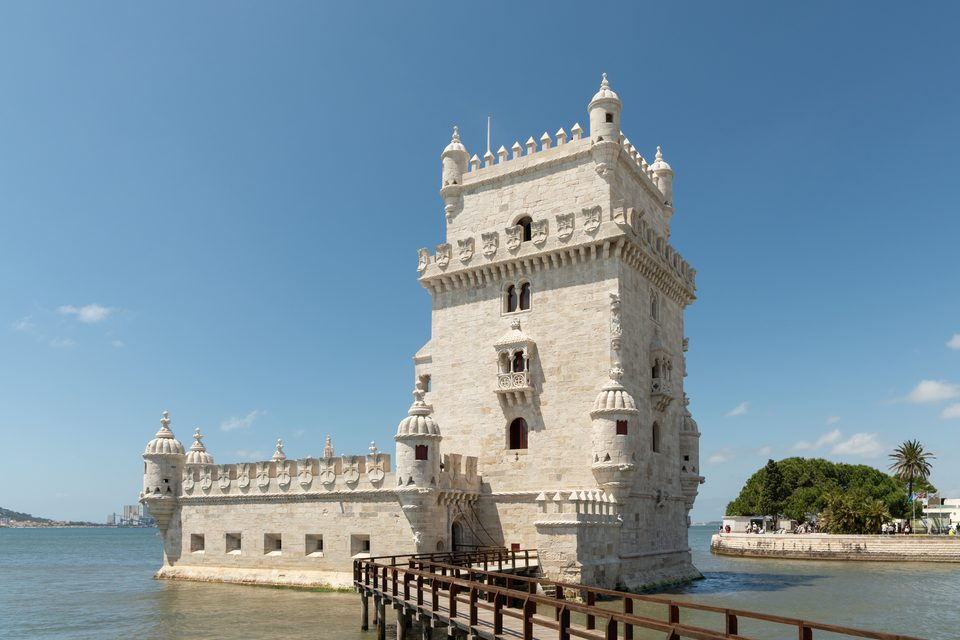
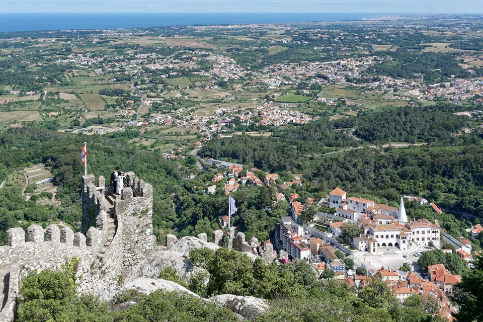
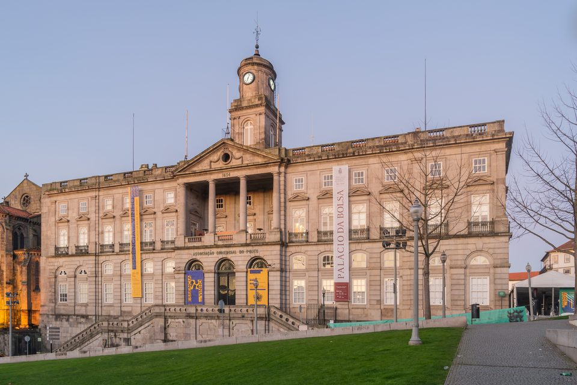
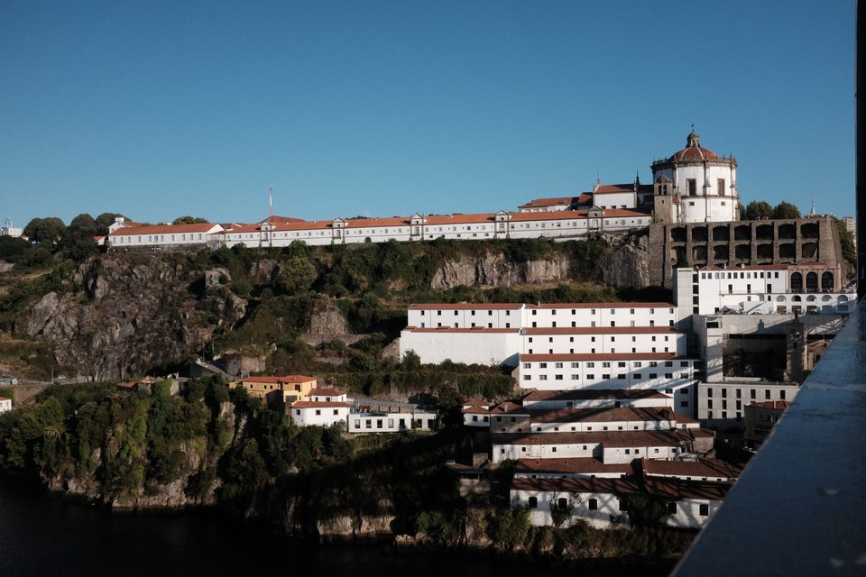

Photo credits
Photos come from Wikimedia Commons under free licences. Guide cards use files vendored from the Earwise media library. Older homepage photos are listed first.
Country covers on the Audio guides page: Portugal by Thomas Dahlstrøm Nielsen, CC BY-SA 4.0. Italy by Wilfredor, CC0. Spain by Alvesgaspar, CC BY-SA 4.0. France by Jorge Royan, CC BY-SA 3.0. Greece by Norbert Nagel, CC BY-SA 3.0. Turkey by Wolfgang Moroder, CC BY-SA 3.0. Croatia by kallerna, CC BY-SA 4.0. South Africa by South African Tourism, CC BY 2.0.
 | Exterior of Sultan Ahmed I Mosque in Istanbul, Turkey 002 by Moonik, CC BY-SA 3.0. Resized and compressed. |
 | Ortaköy Mosque from the Bosphorus - 20250825 by mike, CC BY-SA 4.0. Resized and compressed. |
 | Cape Town (ZA), Cape Point Nature Reserve, Old Cape Point Lighthouse -- 2024 -- 3373 by Dietmar Rabich, CC BY-SA 4.0. Resized and compressed. |
 | Anfiteatro Flavio - Colosseo - panoramio by patano, CC BY-SA 3.0. Resized and compressed. |


Guide photos
 | Pompeii, Triangular forum (48442310112) by Gary Todd from Xinzheng, China, Public domain. Cropped to 3:2 and compressed for this site. |
 | Anfiteatro Flavio - Colosseo - panoramio by patano, CC BY-SA 3.0. Cropped to 3:2 and compressed for this site. |
 | Hagia Sophia Istanbul July 2022-2 by Alvesgaspar, CC BY-SA 4.0. Cropped to 3:2 and compressed for this site. |
 | Ephesus Celsus Library Façade by Benh LIEU SONG, CC BY-SA 3.0. Cropped to 3:2 and compressed for this site. |
 | The Parthenon in Athens by Steve Swayne, CC BY 2.0. Cropped to 3:2 and compressed for this site. |
 | Dawn Charles V Palace Alhambra Granada Andalusia Spain by Jebulon, CC0. Cropped to 3:2 and compressed for this site. |
 | Cortile della Pigna, Vatican Museums by Wilfredor, CC0. Cropped to 3:2 and compressed for this site. |
 | Cape Town - Table Mountain seen from cable car by Romaine, CC0. Cropped to 3:2 and compressed for this site. |
 | Excavations Herculaneum by Jebulon, CC0. Cropped to 3:2 and compressed for this site. |
 | Roman Forum (Forum Romanum) by Gary Todd from Xinzheng, China, Public domain. Cropped to 3:2 and compressed for this site. |
 | Duomo Florence facade by Macieklew, CC BY-SA 4.0. Cropped to 3:2 and compressed for this site. |
 | La Galleria degli Uffizi vista da Palazzo Vecchio, Firenze (2) by Stefano Travasci, CC BY 4.0. Cropped to 3:2 and compressed for this site. |
 | (Venice) Rialto stop on Canal Grande by Didier Descouens, CC BY-SA 4.0. Cropped to 3:2 and compressed for this site. |
 | Positano, Amalfi Coast, Italy (21689385354) by VV Nincic from Toronto, Canada, CC BY 2.0. Cropped to 3:2 and compressed for this site. |
 | Exterior of Sultan Ahmed I Mosque in Istanbul, Turkey 002 by Moonik, CC BY-SA 3.0. Cropped to 3:2 and compressed for this site. |
 | Gate of Salutation (Topkapı Palace) (2024) by Premeditated, CC BY-SA 4.0. Cropped to 3:2 and compressed for this site. |
 | Entrance of Grand Bazaar, Istanbul, Turkey (Ank Kumar) 03 by Ank Kumar, CC BY-SA 4.0. Cropped to 3:2 and compressed for this site. |
 | Galata Kulesi (38800) by Tayeçe2024, CC BY-SA 3.0. Cropped to 3:2 and compressed for this site. |
 | Istanbul Cistern Medusa (03) by Zorka Sojka, CC BY 4.0. Cropped to 3:2 and compressed for this site. |
 | Cappadocia Goreme hike red valley fairy chimneys caves2 by Aquinoxmedia, CC BY-SA 4.0. Cropped to 3:2 and compressed for this site. |
 | Travertine terraces - Pamukkale, Denizli Province, Turkey by Giorgio Galeotti, CC BY-SA 4.0. Cropped to 3:2 and compressed for this site. |
 | View from Miradouro de Santa Luzia, Lisbon, 20250603 2016 9045 by Jakub Hałun, CC BY 4.0. Cropped to 3:2 and compressed for this site. |
 | Praca do Comercio - Lisbon - Portugal by NorbertNagel, CC BY-SA 4.0. Cropped to 3:2 and compressed for this site. |
 | View of Castelo de São Jorge from Elevador de Santa Justa, Lisbon, 20250604 1532 9303 by Jakub Hałun, CC BY 4.0. Cropped to 3:2 and compressed for this site. |
 | Torre de Belém and wooden bridge - landscape view - Lisbon - 2026-05-14 by Norbert Nagel, CC BY-SA 4.0. Cropped to 3:2 and compressed for this site. |
 | Lisboa, Mosteiro dos Jerónimos (29) by Dennis G. Jarvis, CC BY-SA 2.0. Cropped to 3:2 and compressed for this site. |
 | Padrão dos Descobrimentos2 by Plenumchamber, CC BY 3.0. Cropped to 3:2 and compressed for this site. |
 | Lisbon, Museu Nacional dos Coches, coach of ?-1 by Dguendel, CC BY 4.0. Cropped to 3:2 and compressed for this site. |
 | Museu Calouste Gulbenkian (Main Entrance) by Fundação Calouste Gulbenkian, CC BY-SA 4.0. Cropped to 3:2 and compressed for this site. |
 | Sintra Portugal Palácio da Pena-01 by CEphoto, Uwe Aranas, CC BY-SA 3.0. Cropped to 3:2 and compressed for this site. |
 | Palacio Nacional, Sintra, Portugal, 2019-05-25, DD 89 by Diego Delso, CC BY-SA 4.0. Cropped to 3:2 and compressed for this site. |
 | Castelo dos Mouros, Sintra, 20250606 1155 0098 by Jakub Hałun, CC BY 4.0. Cropped to 3:2 and compressed for this site. |
 | Quinta da Regaleira, Sintra, Portugal, 2019-05-25, DD 56 by Diego Delso, CC BY-SA 4.0. Cropped to 3:2 and compressed for this site. |
 | Ribeira from Dom Luis I bridge (1) by Krzysztof Golik, CC BY-SA 4.0. Cropped to 3:2 and compressed for this site. |
 | Porto April 2019-1 by Alvesgaspar, CC BY-SA 4.0. Cropped to 3:2 and compressed for this site. |
 | Exterior view of Livraria Lello 02 by John Samuel, CC BY-SA 4.0. Cropped to 3:2 and compressed for this site. |
 | Palacio da Bolsa in Porto (2) by Krzysztof Golik, CC BY-SA 4.0. Cropped to 3:2 and compressed for this site. |
 | Vila Nova de Gaia Mosteiro da Serra do Pilar (53093438384) by tomislav medak, CC BY-SA 2.0. Cropped to 3:2 and compressed for this site. |
 | Braga, Jardim de Santa Barbara (1) by Palickap, CC BY-SA 4.0. Cropped to 3:2 and compressed for this site. |
 | Baroque stairway of Bom Jesus do Monte - panoramio by Scott Crowe, CC BY-SA 3.0. Cropped to 3:2 and compressed for this site. |
 | Castelo de Guimaraes (1) by Krzysztof Golik, CC BY-SA 4.0. Cropped to 3:2 and compressed for this site. |
 | Guimarães, Largo da Oliveira (5) by Palickap, CC BY-SA 4.0. Cropped to 3:2 and compressed for this site. |
 | Portugal Vallée du Douro (8121915978) by peuplier from Switzerland Suisse romande, CC BY 2.0. Cropped to 3:2 and compressed for this site. |
 | Main facade of Mosteiro da Batalha 078 by Kent Wang, CC BY 4.0. Cropped to 3:2 and compressed for this site. |
 | Mafra May 2013-2 by Alvesgaspar, CC BY-SA 3.0. Cropped to 3:2 and compressed for this site. |
 | Paços da Universidade ou Paços das Escolas - Bibliotena Joanina, Capela São Miguel, Torre e Via Latina by Duca696, CC BY-SA 3.0. Cropped to 3:2 and compressed for this site. |
 | Convento de Cristo - Church from Garden by Ingo Mehling, CC BY-SA 4.0. Cropped to 3:2 and compressed for this site. |